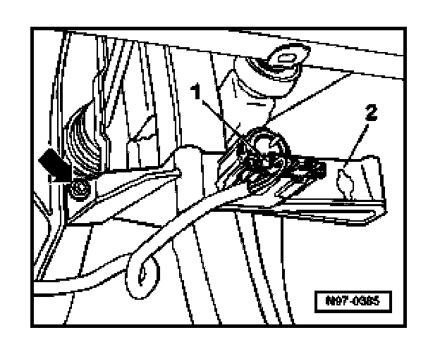
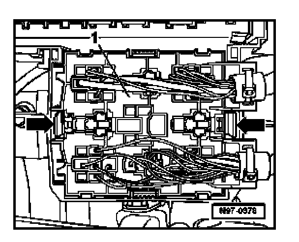
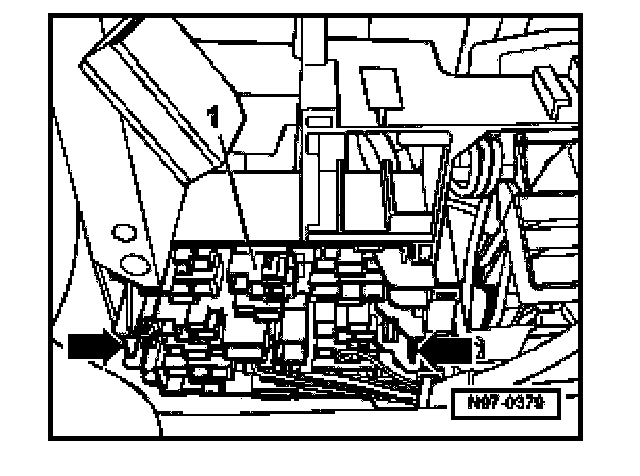

Relay Panel In Left Front Footwell, Removing and Installing
Relay Panel In Left Front Footwell, Removing And Installing
CAUTION:
Before beginning repairs on the electrical system:
- Obtain the anti-theft radio security code.
- Switch off all electrical consumers.
- Switch ignition off and remove ignition key.
- Disconnect negative (-) battery terminal.
- When disconnecting and reconnecting battery terminals, observe all applicable Notes and torque specifications, as well as instructions on performing OBD program and electrical system function checks as specified
Removing
- Disconnect battery.
- Remove driver's lower storage compartment

- Disconnect electrical connection -1- on brake pedal switch.
- Loosen screws on left -arrow- and right (not shown) on bracket -2- for brake pedal switch.
- Remove bracket -2-.

- Press locking lugs -arrows- together and remove front relay panel -1- with wires out of bracket.

- Press locking lugs -arrows- together and remove rear relay panel -1- with wires out of bracket.
Installing
Install in reverse order of removal.